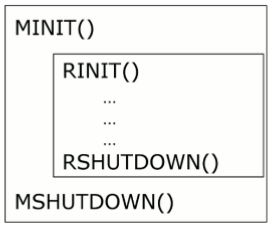
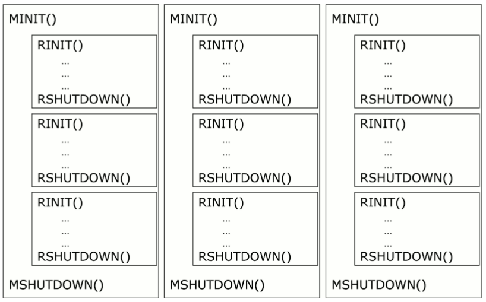
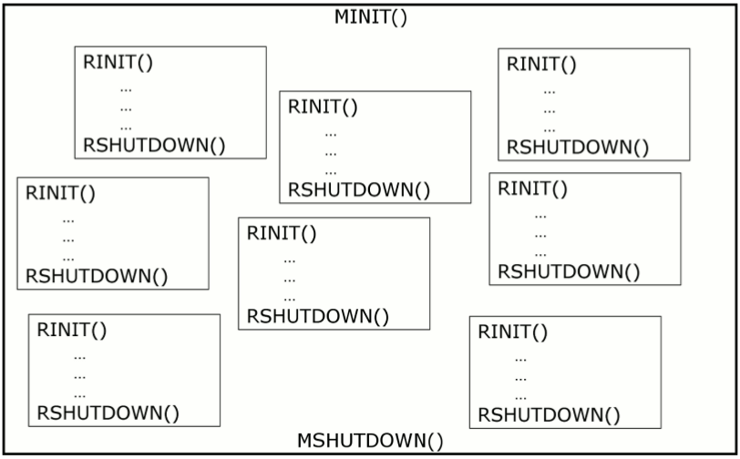
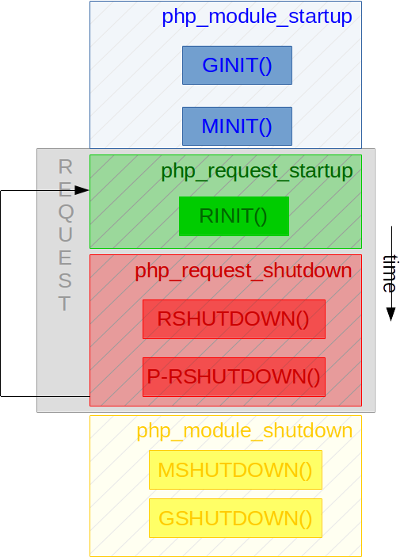

Изучаем жизненный цикл PHP¶
PHP — это сложный механизм, чей жизненный цикл действительно должен понимать каждый, кто хочет понять, как работает PHP. Основная последовательность такая:
PHP запускается. Если это CLI или FPM, выполняется его C-функция main(). Если PHP работает как модуль веб-сервера,
например, используя SAPI apxs2 (Apache 2), PHP запускается чуть позже самого Apache и переходит к выполнению
последовательности запуска своего модуля, одним из которых является PHP. Этот запуск внутри называется шагом
запуска модуля. Мы также сокращаем его как шаг MINIT.
После запуска PHP ожидает обработки одного или нескольких запросов. Когда мы говорим о PHP CLI, там будет только один запрос: текущий запускаемый скрипт. Однако, когда мы говорим о веб-окружении — будь то PHP-FPM или модуль веб-сервера — PHP может обслуживать несколько запросов один за другим. Всё зависит от того, как вы настроили свой веб-сервер: вы можете указать ему обслуживать бесконечное количество запросов или определённое число перед завершением и переработкой процесса. Каждый раз, когда приходит новый запрос для обработки, PHP выполняет шаг запуска запроса. Мы называем его RINIT.
Запрос обслужен, какой-то контент (вероятно) сгенерирован, отлично. Время завершить запрос и подготовиться к обработке, возможно, следующего. Завершение запроса называется шагом завершения запроса. Мы называем его RSHUTDOWN.
После обработки X запросов (одного, нескольких десятков, тысяч и т.д.) PHP наконец завершит сам себя и умрёт. Завершение процесса PHP называется шагом завершения модуля. Мы сокращаем его как MSHUTDOWN.
Если бы мы изобразили эти шаги, получилось бы что-то вроде этого:

Модели параллелизма¶
В окружении CLI всё просто: один процесс PHP обрабатывает один запрос — он запустит один-единственный PHP-скрипт, а затем умрёт. Окружение CLI — это частный случай веб-окружения, которое более сложно.
Чтобы обрабатывать несколько запросов одновременно, вам нужно использовать модель параллелизма. В PHP их существует две:
Модель на основе процессов
Модель на основе потоков
При использовании модели на основе процессов каждый интерпретатор PHP изолируется операционной системой в собственном процессе. Эта модель очень распространена в Unix. Каждый запрос живёт в своём собственном процессе. Эта модель используется PHP-CLI, PHP-FPM и PHP-CGI.
При модели на основе потоков каждый интерпретатор PHP изолируется в потоке с помощью библиотеки потоков. Эта модель в основном используется в операционной системе Microsoft Windows, но может применяться и в большинстве систем Unix. Для этого требуется, чтобы PHP и его расширения были собраны в режиме ZTS.
Вот модель на основе процессов:

А вот модель на основе потоков:

Note
Модель многопроцессности PHP не выбирается вами как разработчиком расширения. Вам придётся её поддерживать. Вам придётся учитывать то, что ваше расширение может работать в многопоточном окружении, особенно на платформах Windows, и вам придётся программировать с учётом этого.
Хуки расширений PHP¶
Как вы могли догадаться, движок PHP будет вызывать ваше расширение в нескольких точках жизненного цикла. Мы называем их хук-функциями. Ваше расширение может заявить интерес к конкретным точкам жизненного цикла, объявив функции-хуки при регистрации в движке.
Эти хуки можно ясно увидеть, если проанализировать структуру расширения PHP, структуру zend_module_entry:
struct _zend_module_entry {
unsigned short size;
unsigned int zend_api;
unsigned char zend_debug;
unsigned char zts;
const struct _zend_ini_entry *ini_entry;
const struct _zend_module_dep *deps;
const char *name;
const struct _zend_function_entry *functions;
int (*module_startup_func)(INIT_FUNC_ARGS); /* MINIT() */
int (*module_shutdown_func)(SHUTDOWN_FUNC_ARGS); /* MSHUTDOWN() */
int (*request_startup_func)(INIT_FUNC_ARGS); /* RINIT() */
int (*request_shutdown_func)(SHUTDOWN_FUNC_ARGS); /* RSHUTDOWN() */
void (*info_func)(ZEND_MODULE_INFO_FUNC_ARGS); /* PHPINFO() */
const char *version;
size_t globals_size;
#ifdef ZTS
ts_rsrc_id* globals_id_ptr;
#else
void* globals_ptr;
#endif
void (*globals_ctor)(void *global); /* GINIT() */
void (*globals_dtor)(void *global); /* GSHUTDOWN */
int (*post_deactivate_func)(void); /* PRSHUTDOWN() */
int module_started;
unsigned char type;
void *handle;
int module_number;
const char *build_id;
};
Теперь давайте посмотрим, какой код следует писать в каждом из этих хуков.
Инициализация модуля: MINIT()¶
Это шаг запуска процесса PHP. В MINIT() вашего расширения вы загружаете и выделяете любой постоянный объект или
фрагмент информации, который вам понадобится для всех будущих запросов.
Для большей части из них это будут объекты, предназначенные только для чтения.
В MINIT() ещё не появился ни один поток или процесс, так что вы можете полностью обращаться к глобальным
переменным без какой-либо защиты. Также вы не должны выделять память, привязанную к запросу, так как запрос ещё не
начался. Вы никогда не используете выделения через
менеджер памяти Zend на шаге MINIT(), а только постоянные
(persistent) выделения. Не emalloc(), а pemalloc(). Если этого не сделать, это приведёт к падениям.
На шаге MINIT() движок выполнения ещё не запущен, так что будьте осторожны и не пытайтесь обращаться к каким-либо
его структурам без особой осторожности.
Если вам нужно зарегистрировать INI-записи для вашего расширения, MINIT() — правильный шаг для этого.
Если вам нужно зарегистрировать доступные только для чтения zend_strings для дальнейшего использования, это нужно сделать здесь (с постоянным выделением).
Если вам нужно выделить объекты, в которые будет происходить запись при обслуживании запроса, то вам нужно будет
продублировать их выделение памяти в пул, специфичный для потока, для конкретного запроса. Помните, что безопасно
писать в глобальное пространство можно только внутри MINIT().
Note
Управление памятью, выделения и отладка рассматриваются в главе о управлении памятью.
MINIT() вызывается функцией zend_startup_modules() внутри функции
php_module_startup().
Завершение модуля: MSHUTDOWN()¶
Это шаг завершения процесса PHP. Довольно просто — вы, по сути, выполняете здесь прямо противоположное тому, что
делали в MINIT(). Вы освобождаете свои ресурсы, снимаете регистрацию своих INI-настроек и так далее.
Будьте осторожны и здесь: движок выполнения уже завершён, так что вы не должны обращаться к каким-либо его переменным (но здесь это и не должно понадобиться).
Поскольку здесь вы не живёте внутри запроса, вам не следует освобождать ресурсы с помощью efree() или подобных
функций менеджера памяти Zend, а освобождать постоянные выделения,
то есть использовать pefree().
MSHUTDOWN() вызывается функцией zend_destroy_modules() из zend_shutdown() внутри функции
php_module_shutdown().
Инициализация запроса: RINIT()¶
Только что поступил запрос, и PHP готовится его обработать здесь. В RINIT() вы инициализируете ресурсы,
необходимые для обработки именно этого запроса. PHP построен по архитектуре “share-nothing” и, как таковой,
предоставляет возможности управления памятью.
В RINIT(), если вам нужно выделить динамическую память, вы будете использовать
менеджер памяти Zend. Вы будете вызывать emalloc().
Менеджер памяти Zend отслеживает память, которую вы выделяете
через него, и когда запрос завершается, он попытается освободить память, привязанную к запросу, если вы забыли
сделать это сами (чего делать не следует).
Здесь вам не должна требоваться постоянная динамическая память, то есть malloc() из libc или pemalloc() из
Zend. Если вам здесь требуется постоянная память и вы забываете её освободить, вы создадите утечки, которые будут
накапливаться по мере того, как PHP обрабатывает всё больше и больше запросов, и в итоге приведёт к падению процесса
(OOM ядра) и истощению памяти машины.
Также будьте очень осторожны и не пишите здесь в глобальное пространство. Если PHP работает в потоке как выбранной модели параллелизма, то вы измените контекст для каждого потока пула (каждого другого запроса, обрабатываемого параллельно с вашим), и вы также можете спровоцировать состояния гонки, если не заблокируете память. Если вам нужны глобальные переменные, вам нужно их защитить.
Note
Управление глобальной областью видимости объясняется в отдельной главе.
RINIT() вызывается функцией zend_activate_module() внутри функции
php_request_startup().
Завершение запроса: RSHUTDOWN()¶
Это шаг завершения запроса PHP. PHP только что закончил обрабатывать свой запрос, и теперь он очищает часть своей
памяти в рамках архитектуры “share-nothing”. Следующий запрос, который придёт, не должен помнить ничего из текущего
запроса. Довольно просто — вы, по сути, выполняете здесь прямо противоположное тому, что делали в RINIT(). Вы
освобождаете ресурсы, привязанные к запросу.
Поскольку здесь вы живёте внутри запроса, вам следует освобождать ресурсы с помощью efree() менеджера памяти Zend
или подобных функций. Если вы забудете освободить память и допустите утечку, в debug-сборках менеджер памяти выведет
в stderr процесса лог об утекающих указателях, и сам их освободит за вас.
Чтобы дать представление, RSHUTDOWN() вызывается:
После того как выполнены пользовательские функции завершения (
register_shutdown_function())После того как вызваны все деструкторы объектов
После того как сброшен буфер вывода PHP
После того как отключён max_execution_time
RSHUTDOWN() вызывается функцией zend_deactivate_modules() внутри функции
php_request_shutdown().
Пост-завершение запроса: PRSHUTDOWN()¶
Этот хук используется редко. Он вызывается после RSHUTDOWN(), но между ними выполняется некоторый дополнительный
код движка.
В частности, на этапе Post-RSHUTDOWN:
Буфер вывода PHP закрыт, а его обработчики сброшены
Суперглобальные переменные PHP уничтожены
Движок выполнения завершён
Этот хук используется очень редко. Он вызывается немного позже RSHUTDOWN(), функцией
zend_post_deactivate_modules() внутри функции
php_request_shutdown().
Инициализация глобальных переменных: GINIT()¶
Этот хук вызывается каждый раз, когда библиотека потоков создаёт новый поток. Если в качестве средства
многопроцессности вы используете процессы, эта функция вызывается только один раз, при запуске PHP, непосредственно
перед вызовом MINIT().
Не вдаваясь здесь в слишком много подробностей, вы просто должны инициализировать свои глобальные переменные здесь, обычно нулевым значением. Управление глобальными переменными будет рассмотрено в отдельной главе.
Помните, что глобальные переменные не очищаются после каждого запроса. Если вам нужно сбрасывать их для каждого
нового запроса (что вероятно), то такую процедуру нужно поместить в RINIT().
Note
Управление глобальной областью видимости объясняется в отдельной главе.
Завершение глобальных переменных: GSHUTDOWN()¶
Этот хук вызывается каждый раз, когда поток завершается в библиотеке потоков. Если в качестве средства
многопроцессности вы используете процессы, эта функция вызывается только один раз, как часть завершения PHP (во
время MSHUTDOWN()).
Не вдаваясь здесь в слишком много подробностей, вы просто должны деинициализировать свои глобальные переменные здесь;
обычно вам нечего делать, но если вы выделяли ресурсы при конструировании глобальных переменных (GINIT()), то
здесь тот шаг, где их следует освободить.
Управление глобальными переменными будет рассмотрено в отдельной главе.
Помните, что глобальные переменные не очищаются после каждого запроса; то есть GSHUTDOWN() не вызывается как
часть RSHUTDOWN().
Note
Управление глобальной областью видимости объясняется в отдельной главе.
Сбор информации: MINFO()¶
Этот хук особенный, так как он никогда не вызывается движком автоматически, а только когда вы запрашиваете у него
информацию о расширении. Типичный сценарий использования — вызов phpinfo(). Эта функция затем выполняется, и
ожидается, что она выведет в поток специальную информацию о текущем расширении.
Информация на панели phpinfo(), короче говоря.
Эта функция также может быть вызвана через CLI, с помощью одного из переключателей reflection, например
php --ri pib, либо из пользовательского пространства вызовом ini_get_all(), например.
Вы можете оставить её пустой, в таком случае будет отображаться только имя расширения и ничего больше (возможные INI-настройки не отображаются, так как это происходит как часть MINFO()).
Размышления о жизненном цикле PHP¶

Как вы могли заметить, RINIT() и RSHUTDOWN() особенно важны, так как они могут вызываться тысячи раз для
вашего расширения. Если настройка PHP ориентирована на веб (не CLI) и настроена так, чтобы обрабатывать бесконечное
количество запросов, то пара RINIT()/RSHUTDOWN() будет вызываться бесконечное количество раз.
Мы хотели бы ещё раз обратить ваше внимание на управление памятью. Крошечный байт, который вы в итоге где-то упустите
при обработке запроса (между RINIT() и RSHUTDOWN()), будет иметь драматические последствия на полностью
загруженных серверах. Поэтому вам советуют использовать
менеджер памяти Zend для таких выделений и быть готовыми
отлаживать свою раскладку памяти.
PHP забудет и освободит память запроса в конце каждого запроса как часть архитектуры “share-nothing” — это
внутренний замысел PHP.
Также, если вы падаете с сигналом SIGSEGV (некорректный доступ к памяти), вы обрушиваете весь процесс. Если настройка PHP использовала потоки как движок многопроцессности, то вы обрушите с собой и все остальные потоки, и даже можете обрушить веб-сервер.
Note
Язык C — это не язык PHP. Используя C, ошибки и просчёты в вашей программе с очень высокой вероятностью приведут к падению и завершению программы.
Хуки через перезапись указателей на функции¶
Теперь вы знаете, когда движок вызовет ваш код, но существуют также заметные указатели на функции, которые вы можете
заменить, чтобы встроиться в движок.
Поскольку эти указатели являются глобальными переменными, вы можете заменить их на шаге MINIT() и вернуть их
обратно на шаге MSHUTDOWN().
Интересны следующие из них:
- AST, Zend/zend_ast.h:
void (*zend_ast_process_t)(zend_ast *ast)
- Компилятор, Zend/zend_compile.h:
zend_op_array *(*zend_compile_file)(zend_file_handle *file_handle, int type)
zend_op_array *(*zend_compile_string)(zval *source_string, char *filename)
- Исполнитель, Zend/zend_execute.h:
void (*zend_execute_ex)(zend_execute_data *execute_data)
void (*zend_execute_internal)(zend_execute_data *execute_data, zval *return_value)
- GC, Zend/zend_gc.h:
int (*gc_collect_cycles)(void)
- TSRM, TSRM/TSRM.h:
void (*tsrm_thread_begin_func_t)(THREAD_T thread_id)
void (*tsrm_thread_end_func_t)(THREAD_T thread_id)
- Ошибки, Zend/zend.h:
void (*zend_error_cb)(int type, const char *error_filename, const uint error_lineno, const char *format, va_list args)
- Исключения, Zend/zend_exceptions.h:
void (*zend_throw_exception_hook)(zval *ex)
- Жизненный цикл, Zend/zend.h:
void (*zend_on_timeout)(int seconds)
void (*zend_interrupt_function)(zend_execute_data *execute_data)
void (*zend_ticks_function)(int ticks)
Существуют и другие, но перечисленные выше наиболее важны из тех, что могут понадобиться при проектировании расширений PHP. Поскольку их названия говорят сами за себя, разбирать каждый из них подробно не нужно.
Если вам нужна дополнительная информация, вы можете поискать их в исходном коде PHP и выяснить, когда и как они вызываются.